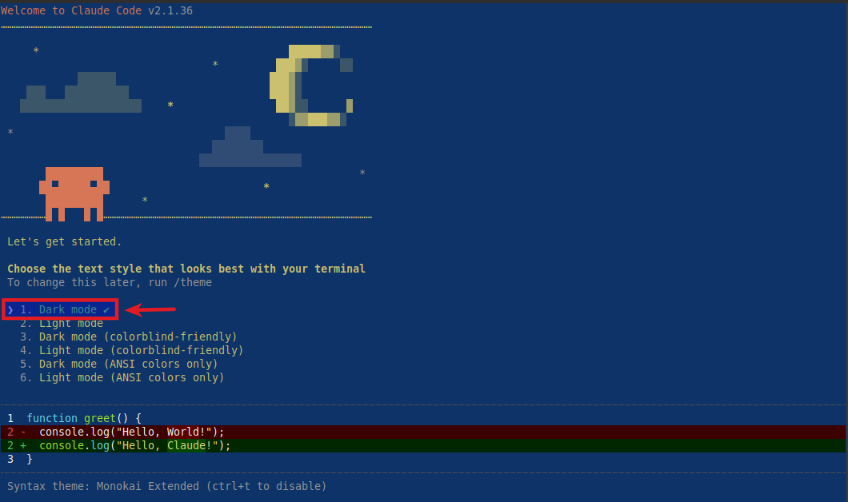
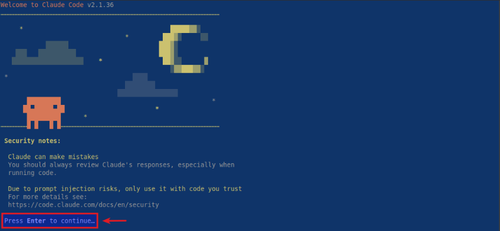
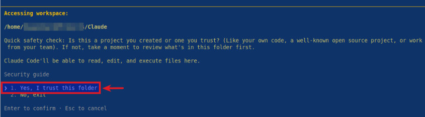
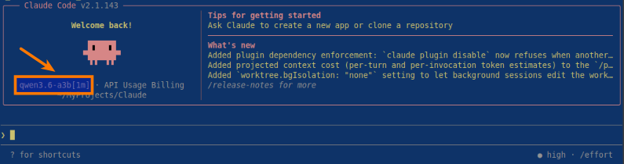

| PolarSPARC |
Claude Code Using Local Model
| Bhaskar S | 05/16/2026 |
Overview
Claude Code (aka Claude) is an AI assisted coding and research tool that is popular amongst a spectrum of users - from technical to non-technical !!!
Claude Code is a natural language, conversational, agentic coding tool that primarily integrates with a users terminal (command line interface) to help with anything one can do from the command line, such as, writing docs, running commands, searching files, researching topics, and much more.
Claude Code by default uses proprietary LLM models from Anthropic such as, Haiku, Sonnet, and Opus.
Most user(s) are unaware that Claude Code can also leverage local LLM models such as the popular Qwen from Alibaba or Gemma from Google.
In this short article, we will demonstrate how one can configure Claude Code to use a local LLM model Qwen 3.6-27B-3B served from llama.cpp.
Installation and Setup
The installation and setup will can on a Ubuntu 24.04 LTS based Linux desktop. Ensure that Docker is installed and setup on the desktop (see INSTRUCTIONS).
To install Claude Code, execute the following command in a terminal window:
$ curl -fsSL https://claude.ai/install.sh | bash
At the time of this article, the following was the typical output:
Setting up Claude Code... + Claude Code successfully installed! Version: 2.1.143 Location: ~/.local/bin/claude Next: Run claude --help to get started + Installation complete!
Create a trusted directory for Claude projects by executing the following command in the terminal window:
$ mkdir -p $HOME/MyProjects/Claude
Next, we will create the required models directory by executing the following command in a terminal window:
$ mkdir -p $HOME/.llama_cpp/models
From the llama.cpp docker RESPOSITORY, one can identify the current version of the docker image. At the time of this article, the latest version of the docker image ended with the version b9174.
We require the docker image with the tag word full. If the desktop has an Nvidia GPU, one can look for the docker image with the tag words full-cuda.
To pull and download the full docker image for llama.cpp with CUDA support, execute the following command in a terminal window:
$ docker pull ghcr.io/ggml-org/llama.cpp:full-cuda-b9174
The following should be the typical output:
full-cuda-b9174: Pulling from ggml-org/llama.cpp 5a7813e071bf: Pull complete a102f36d092c: Pull complete 05ec76e31584: Pull complete 398182656c47: Pull complete 73389fbd088f: Pull complete cbb9175a9bc5: Pull complete 3d6ab8c799cd: Pull complete 7209097bfb98: Pull complete 545a3ada5b6b: Pull complete 78b86fd7e3b2: Pull complete adbd859efcfe: Pull complete 1c4df2eec19f: Pull complete 4f4fb700ef54: Pull complete 8c7a07039685: Pull complete Digest: sha256:84e4e8062542ac10e1f4e432fa8f5c8384a79453ab7367865c49ba2215eacf44 Status: Downloaded newer image for ghcr.io/ggml-org/llama.cpp:full-cuda-b9174 ghcr.io/ggml-org/llama.cpp:full-cuda-b9174
Next, we will download the Qwen 3.6 LLM model from Huggingface - the bartowski/Qwen_Qwen3.6-35B-A3B-GGUF model.
Download Qwen 3.6 35B A3B (4-bit) model to the directory $HOME/.llama_cpp/models.
To start the llama.cpp server for serving the Qwen 3.6 35B A3B (4-bit) model, execute the following command in the terminal window:.
$ docker run --rm --name llama_cpp --gpus all --network host -v $HOME/.llama_cpp/models:/models ghcr.io/ggml-org/llama.cpp:full-cuda-b9174 --server --model /models/Qwen_Qwen3.6-35B-A3B-Q4_K_M.gguf --alias qwen3.6-a3b --host 192.168.1.25 --port 8000 --device CUDA0 --temp 1.0 --top_k 64 --top_p 0.95 --no-mmap --threads 4 --ctx-size 65536 --flash-attn on -ctk q4_0 -ctv q4_0
The following should be the typical trimmed output:
ggml_cuda_init: found 1 CUDA devices (Total VRAM: 15944 MiB): Device 0: NVIDIA GeForce RTX 4060 Ti, compute capability 8.9, VMM: yes, VRAM: 15944 MiB load_backend: loaded CUDA backend from /app/libggml-cuda.so load_backend: loaded CPU backend from /app/libggml-cpu-haswell.so main: n_parallel is set to auto, using n_parallel = 4 and kv_unified = true build_info: b8925-0adede866 system_info: n_threads = 4 (n_threads_batch = 4) / 16 | CUDA : ARCHS = 500,610,700,750,800,860,890,1200 | USE_GRAPHS = 1 | PEER_MAX_BATCH_SIZE = 128 | CPU : SSE3 = 1 | SSSE3 = 1 | AVX = 1 | AVX2 = 1 | F16C = 1 | FMA = 1 | BMI2 = 1 | LLAMAFILE = 1 | OPENMP = 1 | REPACK = 1 | Running without SSL init: using 15 threads for HTTP server start: binding port with default address family main: loading model srv load_model: loading model '/models/Qwen_Qwen3.6-35B-A3B-Q4_K_M.gguf' ...[TRIM]... common_fit_params: successfully fit params to free device memory common_fit_params: fitting params to free memory took 3.12 seconds llama_model_load_from_file_impl: using device CUDA0 (NVIDIA GeForce RTX 4060 Ti) (0000:04:00.0) - 15336 MiB free llama_model_loader: loaded meta data with 48 key-value pairs and 733 tensors from /models/Qwen_Qwen3.6-35B-A3B-Q4_K_M.gguf (version GGUF V3 (latest)) ...[TRIM]... llama_context: n_seq_max = 4 llama_context: n_ctx = 65536 llama_context: n_ctx_seq = 65536 llama_context: n_batch = 2048 llama_context: n_ubatch = 512 llama_context: causal_attn = 1 llama_context: flash_attn = enabled llama_context: kv_unified = true llama_context: freq_base = 10000000.0 llama_context: freq_scale = 1 llama_context: n_ctx_seq (65536) < n_ctx_train (262144) -- the full capacity of the model will not be utilized llama_context: CUDA_Host output buffer size = 3.79 MiB llama_kv_cache: CUDA0 KV buffer size = 360.00 MiB llama_kv_cache: size = 360.00 MiB ( 65536 cells, 10 layers, 4/1 seqs), K (q4_0): 180.00 MiB, V (q4_0): 180.00 MiB llama_kv_cache: attn_rot_k = 1, n_embd_head_k_all = 256 llama_kv_cache: attn_rot_v = 1, n_embd_head_k_all = 256 llama_memory_recurrent: CUDA0 RS buffer size = 251.25 MiB llama_memory_recurrent: size = 251.25 MiB ( 4 cells, 40 layers, 4 seqs), R (f32): 11.25 MiB, S (f32): 240.00 MiB ...[TRIM]... main: model loaded main: server is listening on http://192.168.1.25:8000 main: starting the main loop... srv update_slots: all slots are idle
This completes the necessary setup to test Claude Code using local LLM model(s) !!!
Hands-on with Claude using Local Model
Launch Claude Code by executing the following commands in the terminal window:
$ cd $HOME/MyProjects/Claude
$ MODEL="qwen3.6-a3b" ANTHROPIC_DEFAULT_HAIKU_MODEL="$MODEL" ANTHROPIC_DEFAULT_SONNET_MODEL="$MODEL" ANTHROPIC_DEFAULT_OPUS_MODEL="$MODEL" ANTHROPIC_BASE_URL="http://192.168.1.25:8000" ANTHROPIC_AUTH_TOKEN="ollama" ANTHROPIC_API_KEY="" DISABLE_TELEMETRY="1" claude --model "$MODEL"
The user would be presented with the following prompt to choose a text style:

Choose the option 1. Dark mode and press enter to continue.
Next, the user is presented with some disclaimers and prompted to press Enter to continue as shown below:

Next, the user is prompted to press Enter to trust the current folder as shown below:

Choose the option 1. Yes, I trust this folder and press enter to continue.
Finally, the user setup is complete and Claude is waiting for user input as shown below:

BOOM - Notice that Claude Code is using the local qwen3.6-a3b LLM model !!!
At this point, the user can now enter any request and press enter to continue for Claude to jump into action !!!
References